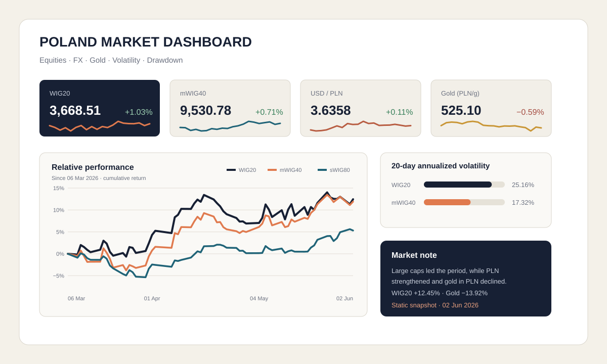

Market analytics case study
Poland Market Dashboard.
A one-page Excel dashboard covering Polish equity indices, major PLN currency pairs and the price of gold in PLN.
The project shows a complete analytical workflow from raw market data and Power Query transformation to calculated metrics and concise market commentary.

01 · Workflow
A repeatable path from raw data to a market view.
The project separates source data, transformation and presentation so that calculations can be traced and refreshed without rebuilding the dashboard manually.
Process
- Collect source market data for Polish indices, FX and gold.
- Clean and standardise tables using Power Query.
- Calculate one-day, five-day, month-to-date and period returns.
- Estimate 20-day annualised volatility and current drawdown.
- Present the indicators in a one-page dashboard.
- Add a concise commentary connecting the metrics to market behaviour.
02 · Coverage
Cross-asset context in one view.
The dashboard monitors WIG20, mWIG40, sWIG80, USD/PLN, EUR/PLN and gold expressed in Polish zloty. This allows equity performance to be read alongside currency and defensive-asset moves.
03 · What it demonstrates
Practical data and presentation skills.
- Power Query transformation and repeatable data preparation.
- Return, volatility and drawdown calculations.
- Cross-asset market monitoring and concise interpretation.
- Excel dashboard layout and information hierarchy.
- Clear repository structure with raw data, workbook and output files.
This is a static educational snapshot and does not constitute investment advice.